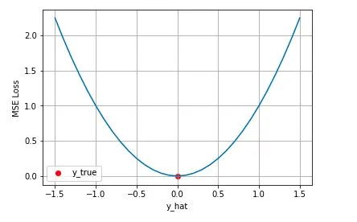
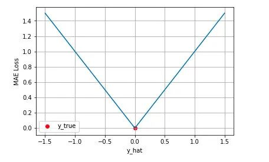
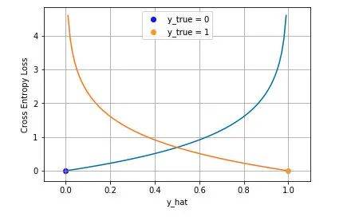
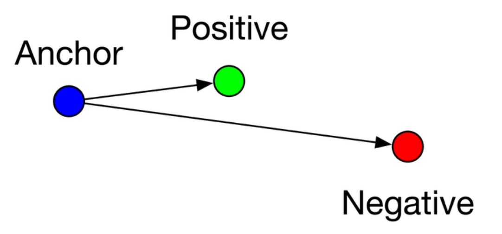
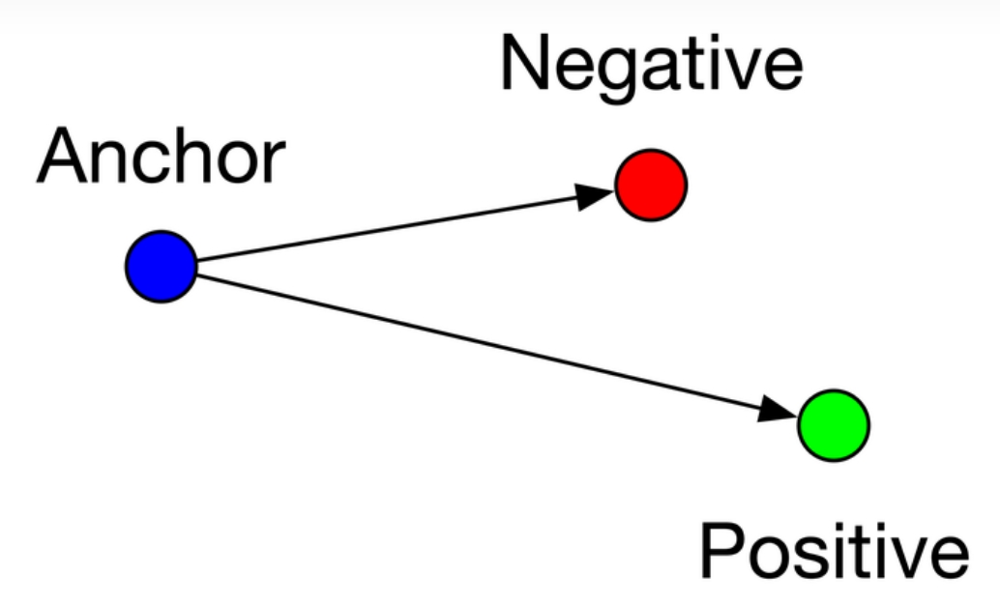
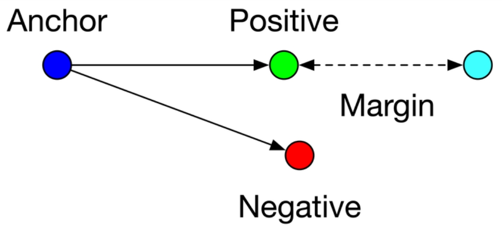

总结一下机器学习中的代价函数、损失函数、目标函数的概念以及一些典型的函数。
概念
代价函数：代价函数是用来衡量模型预测输出与实际标签之间差异的一个数学表达式。在机器学习中，它的目的是最小化模型的预测误差，以找到最佳的模型参数。
损失函数：损失函数本质上与代价函数是同一个概念，也是用来度量模型预测错误的程度。可以用来表述单个样本的损失，也可以表征整个训练集的损失的平均。
目标函数：目标函数是优化问题中想要最小化或最大化的函数，它定义了模型学习的目标。尤其是在监督学习任务中，我们的目标就是最小化模型的损失，即损失函数或代价函数。不过，目标函数的定义可以更宽泛，它也可以包含正则化项（如L1、L2正则化），用以防止模型过拟合，此时的目标函数就不仅仅是简单的损失函数了。
典型函数
均方差损失（Mean Squared Error Loss）
均方差 Mean Squared Error (MSE) 损失是机器学习、深度学习回归任务中最常用的一种损失函数，也称为 L2 Loss。其基本形式如下：
从直觉上理解均方差损失，这个损失函数的最小值为 0（当预测等于真实值时），最大值为无穷大。下图是对于真实值 ，不同的预测值 的均方差损失的变化图。横轴是不同的预测值，纵轴是均方差损失，可以看到随着预测与真实值绝对误差 的增加，均方差损失呈二次方地增加。

在模型输出与真实值的误差服从高斯分布的假设下，在这个假设能被满足的场景中（比如回归），均方差损失是一个很好的损失函数选择；当这个假设没能被满足的场景中（比如分类），均方差损失不是一个好的选择。
平均绝对误差损失（Mean Absolute Error Loss）
平均绝对误差 Mean Absolute Error (MAE) 是另一类常用的损失函数，也称为 L1 Loss。其基本形式如下：
对这个损失函数进行可视化如下图，MAE 损失的最小值为 0（当预测等于真实值时），最大值为无穷大。可以看到随着预测与真实值绝对误差 的增加，MAE 损失呈线性增长：

MSE损失收敛快但容易受outlier影响，MAE对outlier更加健壮但是收敛慢。
交叉熵损失（Cross-Entropy Loss）
交叉熵损失常用于分类问题，特别是多分类问题中。它衡量的是两个概率分布之间的差异，一个是由模型预测得到的概率分布，另一个是真实标签的概率分布（通常是独热编码）。交叉熵损失的公式如下：
其中， $𝑦_𝑖$ 表示第𝑖类的真是标签（0或1，如果是独热编码）， $𝑝_𝑖$ 是模型预测第𝑖类的概率。
这个公式表达了真实标签下的对数似然的负值，目标是最大化似然，即最小化损失。
二元交叉熵损失（Binary Cross-Entropy Loss）
在二分类问题中，二元交叉熵损失被广泛应用，公式为：
下图是对二分类的交叉熵损失函数的可视化，蓝线是目标值为 0 时输出不同输出的损失，黄线是目标值为 1 时的损失。可以看到约接近目标值损失越小，随着误差变差，损失呈指数增长。

多元交叉熵损失（Multiclass Cross-Entropy Loss）
多元交叉熵损失（Multiclass Cross-Entropy Loss）是用于多分类问题的一种损失函数，特别适用于神经网络和其他机器学习模型的训练过程。公式如下：
其中$\hat{y}$为预测值，${y}$为监督值。
三元组损失（Triplet Loss）
主要是用于训练差异性小的样本，比如人脸等。公式如下：
其中，$d_p$ $d_n$ 分别是正对（同一身份的两个实例）和负对（不同身份的实例对）之间的距离，𝛼是一个超参数，即边际。
其中样本可以分为三类：
easy triplets： $L=0$，即 $d_p+ \alpha <d_n$ 这种情况不需要优化，如下图:

hard triplets： $L>𝛼$，即 $d_p < d_n$ ，这种情况损失最大，需要优化，如下图:

semi-hard triplets： $L<𝛼$，即 $d_p < d_n < d_p+ \alpha $ ，这种情况存在损失，但损失比hard triplets要小，也需要优化，如下图：

中心损失（Center Loss）
中心损失的基本思想是为每个类别学习一个中心（或称为类别原型），然后在训练过程中，除了传统的分类损失（如交叉熵损失）外，还加入一个额外的惩罚项，以减小每个样本特征向量与对应类别中心之间的距离。这样做可以提升模型的识别能力，特别是在面对类别间相似度高或类别内差异大的情况时。
中心损失它仅仅用来减少类内（比如说同一表情）的差异，而不能有效增大类间（比如说不同表情）的差异性，公式如下：
其中$N$是样本总数，$f_i$ 表示特征提取网络输出的特征向量， $C_{y_i}$ 表示对应的类别中心， $||·||$ 表示欧氏距离。